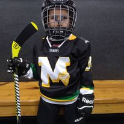
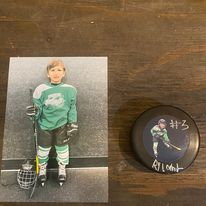

After his first year in 6U Ryland started to stand out on his spring team. About this time I started becoming a window licker. The dad that stood there and watched every move. Ryland was becoming the kid who never passed we both would soon do some growing. The 2nd year of 6U was a big one. Rylands little team was very dominate and had incredibly high hockey IQ for 5 and 6 Year olds. It was full of passing and cheering on every goal. We were always accused of stacking the team. At one point my non-competitive wife even said It feels good being on the best team. Half way through the year i decided no more videos of Ryland and to just enjoy in the moment with him. No more window licking
 